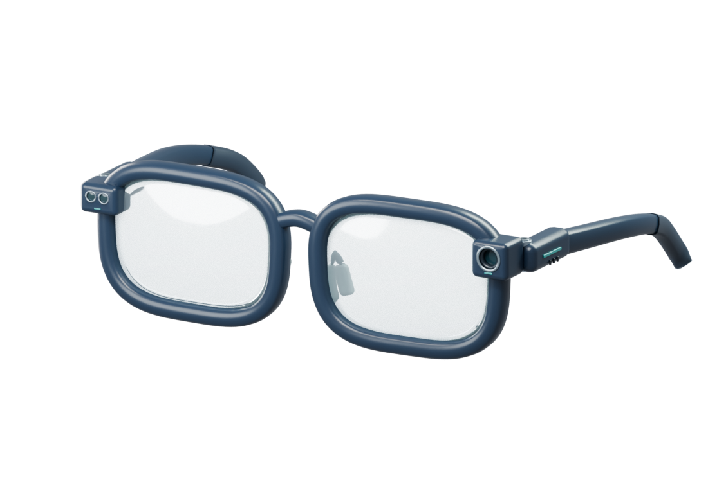

Domain & Literature Survey
Comprehensive academic background, comparative analysis of 13 cited papers, identified research gaps, and system methodology.
View Domain Details →An intelligent assistive wearable that integrates multi-sensor telemetry, edge computer vision, and offline hybrid positioning to empower visually impaired individuals with autonomous navigation and connected guardian protection.

Explore the comprehensive documentation of our project structured according to SLIIT CDAP evaluation criteria.
Comprehensive academic background, comparative analysis of 13 cited papers, identified research gaps, and system methodology.
View Domain Details →Interactive checkpoint timeline detailing project proposal, progress reviews, marks weightage, and evaluation criteria.
Browse Milestones →Repository of produced and pending deliverables including research paper, TAF, charter, and individual component proposals.
Access Documents →Slide decks presented at past evaluations including Proposal Defense, Progress Presentation I, and Progress Presentation II.
View Slide Archive →Meet our 4 undergraduate researchers, student credentials, specialized roles, individual achievements, and academic supervisors.
Meet Research Team →Official communication channels, department contact numbers, location map, and interactive general email template form.
Get in Touch →While GPS facilitates outdoor navigation, indoor environments present severe blind spots, physical obstacles, staircases, and rapid layout shifts.
Visually impaired people face severe safety hazards indoors where satellite signals cannot reach. Conventional white canes provide limited tactile range and cannot anticipate overhead hazards, drops, or dynamic obstacles in advance.
We explore low-latency, edge-computed multi-sensor fusion. By executing obstacle classification and dead-reckoning on localized microcontroller hardware, the user is safeguarded without continuous internet connectivity.
An integrated spectacle platform pairing a miniature camera, TF-Luna LiDAR sensor, and 6-axis IMU. Spatial hazards trigger localized audio cues, while an emergency guardian subsystem monitors falls and inactivity.
To design, implement, and empirically validate an assistive smart spectacle prototype that delivers dependable, real-time indoor navigation, hazard detection, and emergency telemetry for visually impaired individuals.
Each member of team R26-IT-134 leads a specialized research component that converges into the integrated assistive spectacle.
Designing an ergonomic wearable frame integrating micro-LiDAR (TF-Luna), miniature optical camera, and 6-axis IMU with an energy-efficient edge processing bus and bone-conduction audio synthesizer.
Fusing visual landmark recognition with inertial dead-reckoning to compute centimeter-level indoor positioning without requiring internet connectivity or costly pre-installed infrastructure.
Establishing an intelligent telemetry bridge between the wearable device and remote caregivers, featuring automated fall detection, inactivity timers, and instant emergency alerts.
Training and quantizing lightweight convolutional neural network architectures to detect stairs, ground drops, overhangs, and dynamic obstacles under constrained edge hardware capabilities.
Department of Information Technology · Faculty of Computing · Malabe Campus, Sri Lanka.
Undergraduate Comprehensive Design and Analysis Project (CDAP) 2026.
Supervisor: Mr. Ravi Supunya (Lecturer, SLIIT)
Co-Supervisor: Prof. Anuradha Jayakody (Professor, SLIIT)
Evaluation Code: CDAP R26-IT-134 · 16 Credits Final Year Capstone